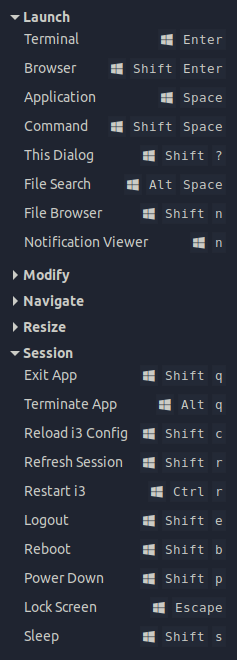
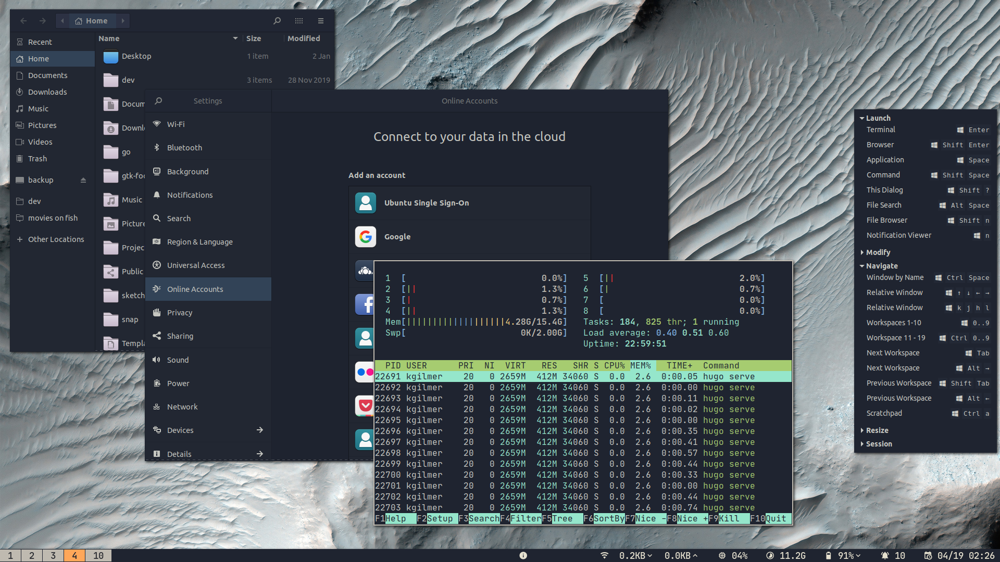
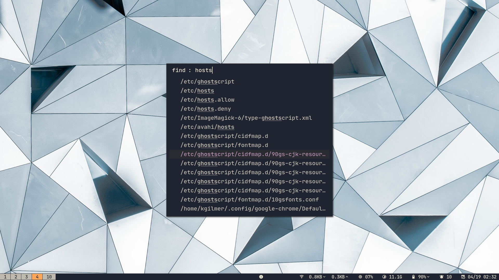
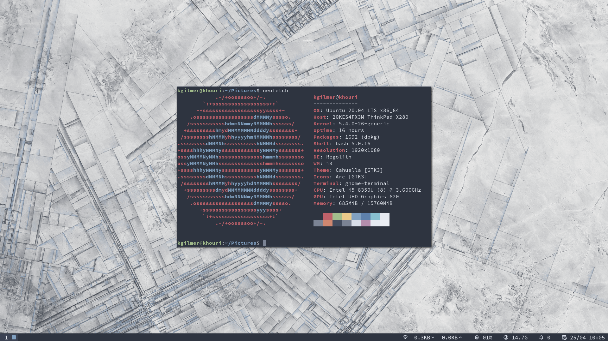
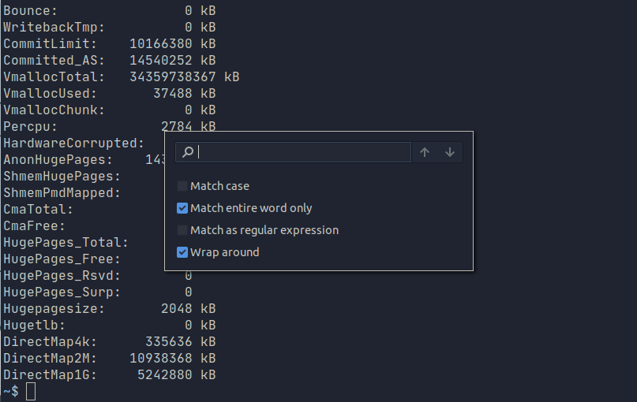

1.4 Release Notes
Regolith R1.4 is a major feature release which includes several improvements and optimizations. Regolith is now smaller and more efficient. The ISO-based installer is now based from the Xubuntu image, and moves from the gdm3 display manager to LightDM. This allows for less resource consumption at runtime and dramatically smaller download size[1]. A new look, lascaille and file search dialog round out the major new features. Read below for more details.
If you maintain your own i3 config file, note that the copy shipped in Regolith 1.4 has changed in that it reads more configuration from Xresources. The intention of this change is to require a full copy of the i3 config file less often, by allowing users to customize the system via Xresource overrides instead of copy/edit of the i3 config file.
For R1.4 in particular @ploum has provided many of the ideas and validation. Gratitude goes out to Regolith contributors and users @cheginit, @nalderto, @baldrailers, @ivomarino, @Josh-Letts, @LawZava, @SkyyySi, @tomster, @gdeflaux, @appelgriebsch, @farsil, and @MrKovar for their time and attention. Also thanks to all that helped to test and filed issues for bugs and feature requests!
Known Issues
Issues and fixes are being tracked in this project.
Features
| Remontoire 1.3.1 |  |
|
| New default look: Lascaille |  | A new look with a bolder, tighter typeface and a darker, higher contrast color theme become Regolith's default look in 1.4. Cahuella, and other looks continue to be available and can be installed with a few commands. |
| New File Search Dialog |  | Based on Rofi and mlocate, users can now quickly find files and launch their default editors from a global dialog. |
| Faster, Easier Customization | Virtually everything exportable from the i3 config can now be overridden directly with Xresources declarations, from changing the meta key to specifying the command that launches the app search dialog. Additionally, up to 3 user configured programs can be set to be loaded upon start. All of this is possible without creating a user copy of the i3 config file, but rather by overriding a specific Xresource. | |
| i3xrocks supports conf.d style configuration | The status indicators in the bar can now be installed and configured independently. This allows for a cleaner dependency model and more efficient runtime characteristics. It also provides future flexibility for user contributed modules and status indicators. Plus, users can provide their own block descriptors in the user directory to easily override the defaults without having to change the i3 config file. | |
New architecture support: arm64 |
With testing done on a Raspberry Pi 4, Regolith now is installable via PPA when using Ubuntu on arm64 devices with the necessary hardware support. | |
| Rewrite of Rofication | Rofication has been rewritten to require less dependencies and be more stable by Regolith contributor @farsil. | |
| New Ubuntu release support: Focal Fossa |  | Regolith runs as a desktop environment in Canonical's latest release of Ubuntu: 20.04. |
| Time and Space Optimizations in ISO release | By switching from GDM3 to LightDM, Regolith avoids loading some unnecessary desktop components into RAM, resulting in between 200MB to 300MB savings on cold start. Additionally, the LiveCD installer is now based on the Xubuntu LiveCD which dramatically lowers the size of the installer and install image of the system[2]. Finally, with more fine-grained control of the bar status blocks, only the blocks you've installed will run. | |
| Pluggable Desktop Notification Components | Users can now cleanly switch between desktop notification implementations such as dunst and notify-osd, in addition to Rofication without resorting to hacks. | |
Integrate gnome-terminal over st-term by Default |
 | Regolith 1.4 uses gnome-terminal with a dynamically generated profile to overcome some character encoding and input devices. st is still available, simply by installing the regolith-st package. |
| Picom (Compton) config can be overriden by user | Users can provide their own Picom compositor config in their user directory. | |
| i3 reload becomes Regolith reload | Refreshing the UI (look, colors, fonts, etc.) after making changes is now as easy as super shift r. | |
| Polish, polish, polish | Just as in previous releases, many tiny fixes and enhancements were added to Regolith in version 1.4. |
{kind=link}
{kind=link}
{kind=link}
{kind=link}
{kind=link}
Fixes
Have a look at the R1.4 project page for a list of bug fixes.
1: This does **not** mean that Regolith uses XFCE4 or any other aspect of Xubuntu other than the install image.
2: The trade-off is that users need to install more of the software they require after installation.
Feedback
Was this page helpful?
Bonne nouvelle ! N'hésitez pas à nous dire quoi améliorer.
Mince alors ! N'hésitez pas à nous dire quoi améliorer.